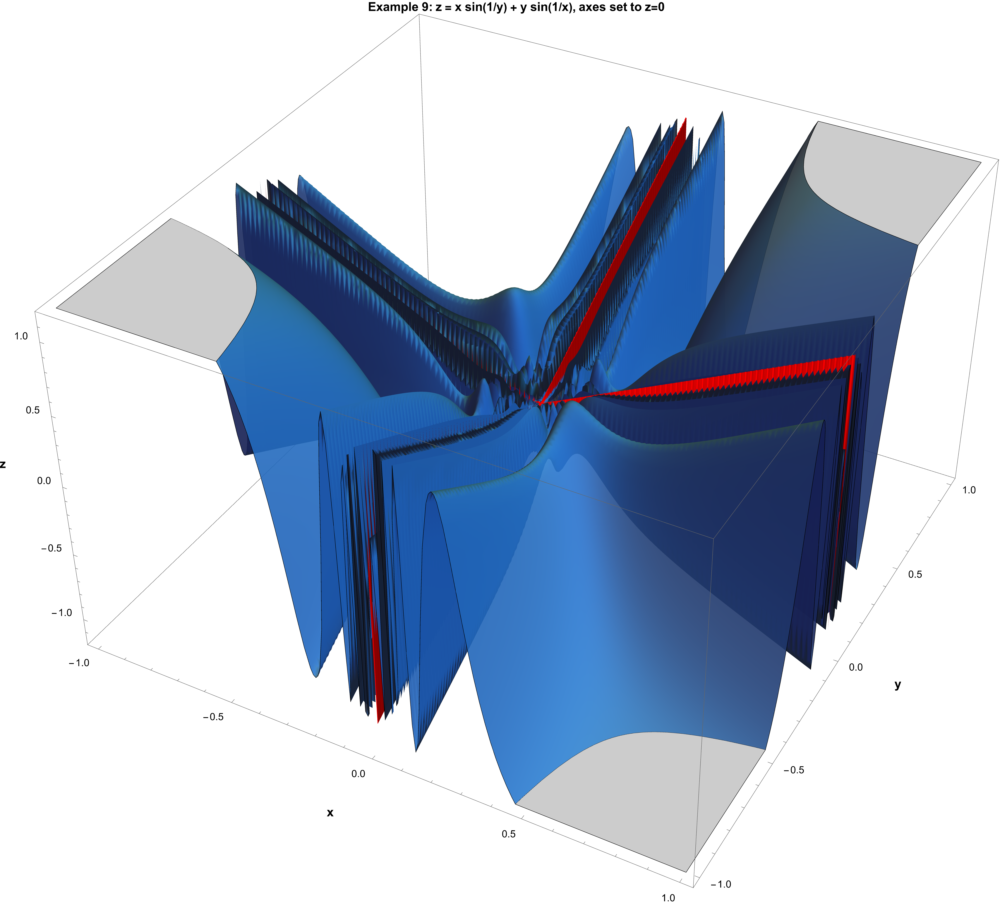
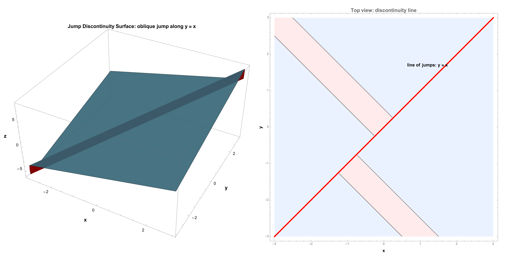
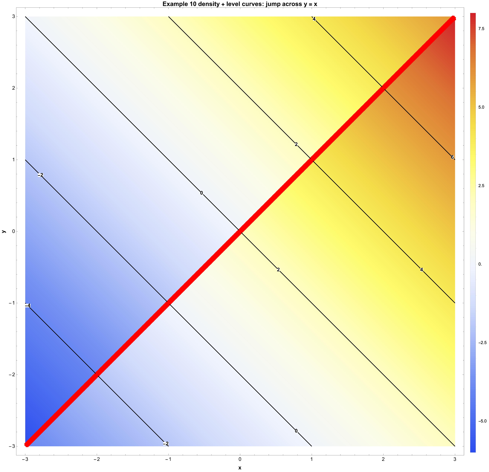
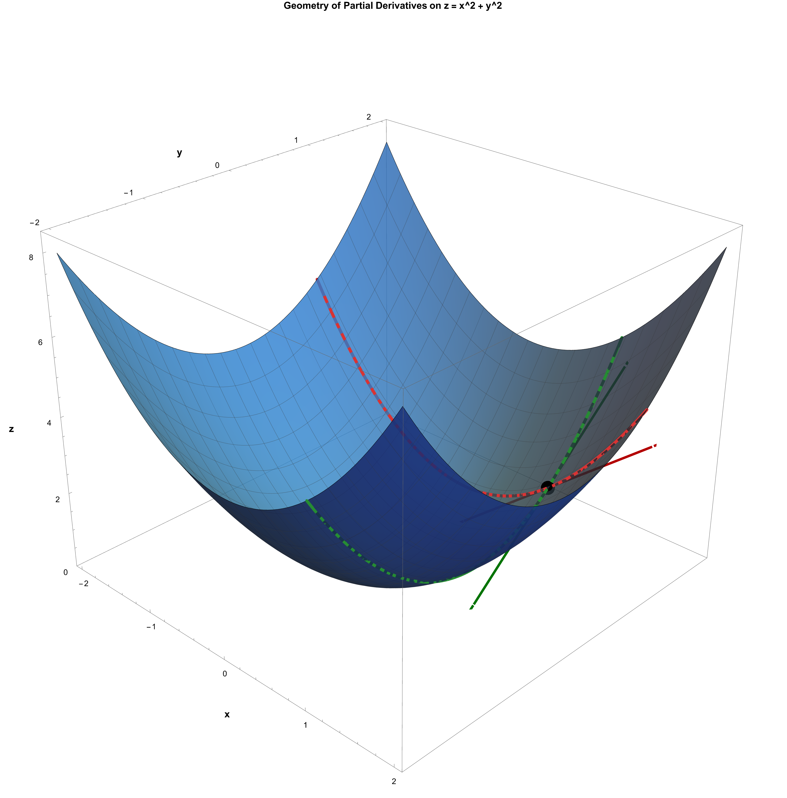

Learning Outcomes
By the end of this lecture, you will be able to:
- Determine whether a multivariable limit exists using path analysis and algebraic simplification
- Interpret continuity of \(f(x,y)\) geometrically from graphs and level sets
- Compute first-order partial derivatives and explain their directional meaning along coordinate axes
- Construct linear approximations and tangent-plane formulas near a base point
- Distinguish partial differentiability from full differentiability
- Apply the multivariable chain rule to composed mappings
Lecture Scope and Goals (5 min)
This 140-minute lecture moves from geometry to calculus: after identifying surfaces and parametrizations in Lecture 2, we now study local change. The key question is: how does a function of several variables behave near a point?
- Understand limits in two or three variables,
- build partial derivatives as local rates of change,
- preview tangent planes through linearization,
- prepare for gradient, directional derivative, and optimization in the next lecture.
Lecture Scope and Goals
In this lecture, we focus on functions of two variables and the transition from one-variable calculus ideas to higher dimensions. The main goals are:
understand what a function \(f:\mathbb{R}^2\to\mathbb{R}\) means geometrically and analytically,
define and compute limits of two-variable functions,
study continuity from computational and topological viewpoints,
introduce the derivative as a best linear approximation in two variables,
identify common pitfalls when handling multivariable limits.
In one variable, approaching a point means moving from left or right. In two variables, there are infinitely many directions and curves of approach. This is why limits, continuity, and derivatives require more careful definitions.
Functions in Higher Dimension: Focus on \(\mathbb{R}^2\to\mathbb{R}\)
A function of two variables is a rule \[f:D\subseteq\mathbb{R}^2\to\mathbb{R},\qquad (x,y)\mapsto f(x,y).\]
Domain and Graph
The domain \(D\) is the set of input points \((x,y)\) where \(f\) is defined.
The graph is the surface in \(\mathbb{R}^3\): \[z=f(x,y).\]
Level curves are planar traces: \[f(x,y)=c.\]
Example 1 (polynomial).
\[f(x,y)=x^2+xy+y^2.\] Domain: all of \(\mathbb{R}^2\). Level curves \(x^2+xy+y^2=c\) are ellipses (for \(c>0\)).
Example 2 (restricted domain).
\[f(x,y)=\sqrt{1-x^2-y^2}.\] Domain: disk \(x^2+y^2\le 1\). The graph is the upper hemisphere of radius \(1\).
Example 3 (quotient).
\[f(x,y)=\frac{x^2-y^2}{x^2+y^2}.\] Domain: \(\mathbb{R}^2\setminus\{(0,0)\}\).
Distance, Open Sets, and Neighborhoods in \(\mathbb{R}^2\)
For points \(p=(x_1,y_1)\) and \(q=(x_2,y_2)\) in \(\mathbb{R}^2\), define distance by \[d(p,q)=\sqrt{(x_1-x_2)^2+(y_1-y_2)^2}=\left\lVert p-q \right\rVert.\]
Open Ball in \(\mathbb{R}^2\)
For center \(a\in\mathbb{R}^2\) and radius \(r>0\), \[B_r(a)=\{p\in\mathbb{R}^2:\left\lVert p-a \right\rVert<r\}.\]
Open Set
A set \(U\subseteq\mathbb{R}^2\) is open if for every \(a\in U\), there exists \(r>0\) such that \[B_r(a)\subseteq U.\] Intuition: points in an open set are interior points; no boundary point is included.
Examples.
Open disk: \(x^2+y^2<1\) is open.
Closed disk: \(x^2+y^2\le 1\) is not open.
Upper half-plane: \(\{(x,y): y>0\}\) is open.
Limits of Functions of Two Variables
Let \(f:D\to\mathbb{R}\) and let \(a=(a_1,a_2)\) be a limit point of \(D\).
Definition (\(\varepsilon\)–\(\delta\))
We say \[\lim_{(x,y)\to(a_1,a_2)} f(x,y)=L\] if for every \(\varepsilon>0\), there exists \(\delta>0\) such that whenever \[0<\left\lVert (x,y)-(a_1,a_2) \right\rVert<\delta,\] we have \[\left\lvert f(x,y)-L \right\rvert<\varepsilon.\]
Equivalent Sequential Criterion
The limit equals \(L\) if and only if for every sequence \((x_n,y_n)\to(a_1,a_2)\) with \((x_n,y_n)\neq(a_1,a_2)\), \[f(x_n,y_n)\to L.\] This criterion is powerful for proving limits do not exist.
Worked Examples
Example 4 (limit exists).
\[\lim_{(x,y)\to(0,0)}(x^2+y^2)=0.\] Reason: \(\left\lvert x^2+y^2 \right\rvert=x^2+y^2=\left\lVert (x,y) \right\rVert^2\to0\).
Example 5 (path dependence: limit does not exist).
\[f(x,y)=\frac{x^2-y^2}{x^2+y^2},\qquad (x,y)\neq(0,0).\] Along \(y=0\), \(f(x,0)=1\). Along \(x=0\), \(f(0,y)=-1\). Different path-limits imply no limit at \((0,0)\).
Example 6 (a classical positive example).
\[f(x,y)=\frac{x^2y}{x^2+y^2},\qquad (x,y)\neq(0,0).\] Claim: \[\lim_{(x,y)\to(0,0)} f(x,y)=0.\] Estimate: \[\left\lvert f(x,y) \right\rvert=\frac{x^2\left\lvert y \right\rvert}{x^2+y^2}\le \left\lvert y \right\rvert\le \sqrt{x^2+y^2}=\left\lVert (x,y) \right\rVert\to 0.\]
Example 7 (testing many lines is not enough).
\[f(x,y)=\frac{x^2y}{x^4+y^2},\qquad (x,y)\neq(0,0).\] For line \(y=mx\), \[f(x,mx)=\frac{mx^3}{x^4+m^2x^2}=\frac{mx}{x^2+m^2}\to0.\] But for curve \(y=x^2\), \[f(x,x^2)=\frac{x^4}{x^4+x^4}=\frac12.\] So the limit does not exist.
Example 8 (full limit exists, but one iterated limit does not).
Define \[f(x,y)= \begin{cases} x\sin\!\left(\dfrac1y\right), & y\neq 0,\\ 0, & y=0. \end{cases}\] At \((0,0)\), \[\left\lvert f(x,y) \right\rvert\le \left\lvert x \right\rvert\to 0,\] so \[\lim_{(x,y)\to(0,0)} f(x,y)=0.\] However, \[\lim_{x\to 0}\Big(\lim_{y\to 0} f(x,y)\Big)\] does not exist, because for each fixed \(x\neq 0\), the inner limit \[\lim_{y\to 0}x\sin\!\left(\dfrac1y\right)\] does not exist.
Example 9 (full limit exists, both iterated limits fail).
Define \[f(x,y)= \begin{cases} x\sin\!\left(\dfrac1y\right)+y\sin\!\left(\dfrac1x\right), & xy\neq 0,\\ 0, & xy=0. \end{cases}\] Then \[\left\lvert f(x,y) \right\rvert\le \left\lvert x \right\rvert+\left\lvert y \right\rvert\to 0,\] so \[\lim_{(x,y)\to(0,0)} f(x,y)=0.\] But for fixed \(x\neq 0\), the term \(x\sin(1/y)\) makes \(\lim_{y\to0}f(x,y)\) fail; similarly for fixed \(y\neq0\), the term \(y\sin(1/x)\) makes \(\lim_{x\to0}f(x,y)\) fail. Therefore neither iterated limit exists.

Example 10 (jump discontinuity along a line).
Consider \[g(x,y)= \begin{cases} x+y, & y>x,\\ x+y+2, & y<x,\\ x+y+1, & y=x. \end{cases}\] This is a two-variable function with a jump across the oblique line \(y=x\). At any point \((a,a)\) on that line, \[\lim_{(x,y)\to(a,a),\,y>x} g(x,y)=2a, \qquad \lim_{(x,y)\to(a,a),\,y<x} g(x,y)=2a+2,\] so the limit does not exist on that line.


Checking only paths of the form \(y=mx\) can miss nonlinear approaches. If all lines give the same value, the limit still may fail to exist.
Do not substitute \((0,0)\) directly into a formula with denominator \(0\) and conclude anything about the limit. Undefined value at the point and existence of limit are different questions.
Continuity of Two-Variable Functions
Quick Review: Continuity in One Variable
Before moving fully to two variables, recall the one-variable picture. Let \(h:I\subseteq\mathbb{R}\to\mathbb{R}\).
Continuity at \(x_0\): \(\lim_{x\to x_0}h(x)=h(x_0)\).
Intermediate Value Theorem (IVT): if \(h\) is continuous on \([a,b]\), then every value between \(h(a)\) and \(h(b)\) is attained.
Extreme Value Theorem (max/min): if \(h\) is continuous on \([a,b]\), then \(h\) attains both a maximum and a minimum.
Boundedness theorem: if \(h\) is continuous on \([a,b]\), then \(h\) is bounded on \([a,b]\).
The key reason these hold is that \([a,b]\) is compact (closed and bounded in \(\mathbb{R}\)), and also connected.
Comparison with Two Variables
Now let \(f:D\subseteq\mathbb{R}^2\to\mathbb{R}\). The pointwise definition is analogous. In calculus, for global conclusions (boundedness and max/min), we mainly work on compact domains.
(A) Intermediate-value behavior.
In one variable, IVT is phrased on an interval \([a,b]\). In two variables, a practical classroom version is:
If \(f\) is continuous on a region and you move continuously from point \(P\) to point \(Q\) inside that region, then \(f\) takes every value between \(f(P)\) and \(f(Q)\) along that motion.
So we still keep the same intuition: continuous change cannot skip intermediate values.
Example (IVT failure on a disconnected domain).
Let \[D=\{(x,y)\in\mathbb{R}^2:x<0\}\cup\{(x,y)\in\mathbb{R}^2:x>0\}\] and define \[f(x,y)= \begin{cases} -1, & x<0,\\ 1, & x>0. \end{cases}\] The function is continuous on \(D\). Choose \(P=(-1,0)\) and \(Q=(1,0)\). Then \[f(P)=-1,\qquad f(Q)=1.\] But there is no point in \(D\) where \(f=0\), so an intermediate value is missing. This shows IVT can fail when the domain is not connected.
(B) Max/min and boundedness.
For \(\mathbb{R}^2\), the direct analogue of \([a,b]\) is a compact set \(K\subseteq\mathbb{R}^2\) (closed and bounded), and this is the main domain type we care about in calculus applications.
If \(f:K\to\mathbb{R}\) is continuous and \(K\) is compact, then \(f\) is bounded on \(K\) and attains both global maximum and global minimum on \(K\).
(C) Why compactness matters (pitfall).
If the domain is not compact, max/min can fail even for continuous functions. \[f(x,y)=x^2+y^2\quad\text{on }\mathbb{R}^2\] is continuous and has a minimum \(0\) at \((0,0)\), but no maximum.
\[f(x,y)=x\quad\text{on }\{(x,y):x^2+y^2<1\}\] is bounded by \(-1<f<1\), but has no attained maximum/minimum because boundary points are excluded.
Pointwise Definition
A function \(f:D\to\mathbb{R}\) is continuous at \(a\in D\) if \[\lim_{(x,y)\to a}f(x,y)=f(a).\] So continuity means: the limit exists and equals the function value.
Computation Rules
If \(f,g\) are continuous at \(a\), then so are:
\(f+g\), \(fg\), and \(cf\),
\(\dfrac{f}{g}\) when \(g(a)\neq0\),
compositions \(\phi\circ f\) when \(\phi\) is one-variable continuous.
Hence polynomials are continuous everywhere; rational functions are continuous on domains where denominator is nonzero.
Theorem: Continuity of Composition (Different Combinations)
If \(F\) is continuous at \(a\) and \(G\) is continuous at \(F(a)\), then \(G\circ F\) is continuous at \(a\).
Let \(F:X\to Y\) and \(G:Y\to Z\) be continuous. To prove \(G\circ F:X\to Z\) is continuous, take any open set \(U\subseteq Z\). Since \(G\) is continuous, \(G^{-1}(U)\) is open in \(Y\). Since \(F\) is continuous, \(F^{-1}(G^{-1}(U))\) is open in \(X\). But \[(G\circ F)^{-1}(U)=F^{-1}(G^{-1}(U)).\] So the preimage of every open set in \(Z\) under \(G\circ F\) is open in \(X\). Therefore \(G\circ F\) is continuous.
This one statement includes the main calculus combinations:
1D \(\to\) 1D \(\to\) 1D: \[F:\mathbb{R}\to\mathbb{R},\quad G:\mathbb{R}\to\mathbb{R}\] continuous \(\Rightarrow G(F(x))\) continuous.
2D \(\to\) 1D \(\to\) 1D: \[F:\mathbb{R}^2\to\mathbb{R},\quad G:\mathbb{R}\to\mathbb{R}\] continuous \(\Rightarrow G(F(x,y))\) continuous.
1D \(\to\) 2D \(\to\) 1D: \[F:\mathbb{R}\to\mathbb{R}^2,\quad F(t)=(u(t),v(t)),\quad G:\mathbb{R}^2\to\mathbb{R}\] continuous \(\Rightarrow G(u(t),v(t))\) continuous in \(t\).
2D \(\to\) 2D \(\to\) 1D: \[F:\mathbb{R}^2\to\mathbb{R}^2,\quad F(x,y)=(u(x,y),v(x,y)),\quad G:\mathbb{R}^2\to\mathbb{R}\] continuous \(\Rightarrow G(u(x,y),v(x,y))\) continuous.
Quick examples.
\(F(x,y)=x^2+y^2\), \(G(s)=e^s\) \(\Rightarrow\) \(e^{x^2+y^2}\) is continuous.
\(F(t)=(\cos t,\sin t)\), \(G(x,y)=xy\) \(\Rightarrow\) \(G(F(t))=\cos t\sin t\) is continuous.
\(F(x,y)=(x+y,xy)\), \(G(u,v)=\dfrac{u}{1+v^2}\) \(\Rightarrow\) \(\dfrac{x+y}{1+x^2y^2}\) is continuous.
Topological (Open Set) View
A function \(f:D\to\mathbb{R}\) is continuous if and only if for every open set \(V\subseteq\mathbb{R}\), the preimage \[f^{-1}(V)=\{(x,y)\in D: f(x,y)\in V\}\] is open in \(D\) (with the subspace topology).
Why this matters.
This abstract definition works in all metric spaces and is independent of coordinates.
Examples of Continuity
Example 11.
\[f(x,y)=e^{x^2+y^2}\sin(xy)\] is continuous on \(\mathbb{R}^2\) because it is built from continuous operations.
Example 12 (piecewise).
Define \[f(x,y)= \begin{cases} \dfrac{x^2y}{x^2+y^2}, & (x,y)\neq(0,0),\\ 0, & (x,y)=(0,0). \end{cases}\] By Example 6, \(\lim_{(x,y)\to(0,0)}f(x,y)=0=f(0,0)\), so \(f\) is continuous at the origin.
Derivative in Two Variables: Best Linear Approximation
Partial Derivatives: First Step Toward Derivatives
For a function \(f(x,y)\), we can vary one variable at a time.
Definition at \((a,b)\).
\[f_x(a,b)=\lim_{h\to0}\frac{f(a+h,b)-f(a,b)}{h}, \qquad f_y(a,b)=\lim_{k\to0}\frac{f(a,b+k)-f(a,b)}{k},\] when these limits exist.
\(f_x\) is the rate of change in the \(x\)-direction (hold \(y=b\) fixed).
\(f_y\) is the rate of change in the \(y\)-direction (hold \(x=a\) fixed).
Geometrically, \(f_x(a,b)\) and \(f_y(a,b)\) are slopes of trace curves on planes \(y=b\) and \(x=a\).
Geometry picture (simple example).
Take \[f(x,y)=x^2+y^2,\] and the point \((1,1,2)\) on the surface \(z=f(x,y)\).
Fix \(y=1\): trace curve is \(z=x^2+1\), so slope at \(x=1\) is \[f_x(1,1)=2.\]
Fix \(x=1\): trace curve is \(z=1+y^2\), so slope at \(y=1\) is \[f_y(1,1)=2.\]
So each partial derivative is the tangent-line slope of a different planar slice through the same surface point.

Notation.
\[f_x=\frac{\partial f}{\partial x},\qquad f_y=\frac{\partial f}{\partial y}.\] If \(f\) is differentiable, the total differential is \[\,\mathrm{d}f = f_x\,\,\mathrm{d}x + f_y\,\,\mathrm{d}y.\]
Examples.
If \(f(x,y)=x^2y+\sin(xy)\), then \[f_x=2xy+y\cos(xy),\qquad f_y=x^2+x\cos(xy).\]
If \(f(x,y)=|x|+y^2\), then at \((0,0)\): \[f_y(0,0)=0\quad\text{but}\quad f_x(0,0)\text{ does not exist}.\] So even existence of one partial derivative does not imply existence of the other.
Definition of Differentiability at a Point
Let \(f:\mathbb{R}^2\to\mathbb{R}\) and \(a=(a_1,a_2)\). We say \(f\) is differentiable at \(a\) if there exists a linear map \[L:\mathbb{R}^2\to\mathbb{R}\] such that \[f(a+h)-f(a)-L(h)=o(\left\lVert h \right\rVert)\quad\text{as }h\to0.\] Equivalently, \[\lim_{h\to0}\frac{f(a+h)-f(a)-L(h)}{\left\lVert h \right\rVert}=0.\] The map \(L\) is the derivative \(Df(a)\).
Coordinate Form
In two variables, if differentiable, \[Df(a)(h_1,h_2)=f_x(a)h_1+f_y(a)h_2,\] so \[f(a+h)\approx f(a)+f_x(a)h_1+f_y(a)h_2.\] The gradient is \[\nabla f(a)=(f_x(a),f_y(a)),\] and \[Df(a)(h)=\nabla f(a)\cdot h.\]
Tangent Plane Formula
For \(z=f(x,y)\) at \((a,b,f(a,b))\), the tangent plane is \[z=f(a,b)+f_x(a,b)(x-a)+f_y(a,b)(y-b).\]
Find the tangent plane of \[z=x^2+y^2\] at the point \((1,2,5)\).
Examples
Example 13 (differentiable polynomial).
\[f(x,y)=x^2+3xy-y^2.\] At \((1,2)\), \[f_x=2x+3y,\quad f_y=3x-2y,\] so \[\nabla f(1,2)=(8,-1),\quad Df(1,2)(h_1,h_2)=8h_1-h_2.\] Local linearization: \[f(1+h_1,2+h_2)\approx f(1,2)+8h_1-h_2.\]
Example 14 (partials exist but not differentiable at origin).
Define \[f(x,y)= \begin{cases} \dfrac{xy}{\sqrt{x^2+y^2}}, & (x,y)\neq(0,0),\\ 0, & (x,y)=(0,0). \end{cases}\] Both \(f_x(0,0)\) and \(f_y(0,0)\) exist and equal \(0\), but \[f(t,t)=\frac{t^2}{\sqrt{2t^2}}=\frac{|t|}{\sqrt2},\] which is not \(o(\sqrt{t^2+t^2})=o(|t|)\). Hence \(f\) is not differentiable at \((0,0)\).
Existence of partial derivatives at a point does not guarantee differentiability at that point.
A Useful Sufficient Condition
If \(f_x\) and \(f_y\) exist in a neighborhood of \(a\) and are continuous at \(a\), then \(f\) is differentiable at \(a\).
Higher-Order Partial Derivatives (Order Can Matter)
Once first partial derivatives exist, we can differentiate again.
Second-order partials.
\[f_{xx}=\frac{\partial}{\partial x}(f_x),\qquad f_{yy}=\frac{\partial}{\partial y}(f_y),\qquad f_{xy}=\frac{\partial}{\partial y}(f_x),\qquad f_{yx}=\frac{\partial}{\partial x}(f_y).\] Here \(f_{xy}\) and \(f_{yx}\) are mixed partial derivatives.
If \(f_{xy}\) and \(f_{yx}\) are continuous in a neighborhood of a point, then \[f_{xy}=f_{yx}\] at that point.
So under sufficient smoothness, the order of differentiation does not matter. But without those conditions, the order can matter.
Example where order matters at one point.
Define \[f(x,y)= \begin{cases} \dfrac{xy(x^2-y^2)}{x^2+y^2}, & (x,y)\neq(0,0),\\ 0, & (x,y)=(0,0). \end{cases}\] At \((0,0)\), one can compute \[f_{xy}(0,0)=-1,\qquad f_{yx}(0,0)=1.\] Hence \[f_{xy}(0,0)\neq f_{yx}(0,0),\] so the differentiation order matters here.
More Examples: How to Judge Differentiability Quickly
Example A (smooth polynomial: differentiable everywhere).
\[f(x,y)=x^3+2xy-y^2.\] All partial derivatives are polynomials, hence continuous everywhere. Therefore \(f\) is differentiable at every point of \(\mathbb{R}^2\).
Example B (continuous but not differentiable at one point).
\[f(x,y)=\sqrt{x^2+y^2}.\] At \((0,0)\), the function is continuous. But \[\frac{f(th)-f(0,0)}{|t|}=\frac{|t|\,\left\lVert h \right\rVert}{|t|}=\left\lVert h \right\rVert\] does not come from a linear map in \(h\), so \(f\) is not differentiable at \((0,0)\).
Example C (differentiable despite piecewise definition).
\[f(x,y)= \begin{cases} x^2+y^2, & x^2+y^2\le 1,\\ 2x^2+2y^2-1, & x^2+y^2>1. \end{cases}\] On the circle \(x^2+y^2=1\), both formulas give value \(1\), but gradients are different: \[\nabla(x^2+y^2)=(2x,2y),\qquad \nabla(2x^2+2y^2-1)=(4x,4y).\] So \(f\) is continuous on \(\mathbb{R}^2\), but not differentiable on the boundary circle.
Example D (key positive criterion in practice).
\[f(x,y)= \begin{cases} \dfrac{x^2y^2}{x^2+y^2}, & (x,y)\neq(0,0),\\ 0, & (x,y)=(0,0). \end{cases}\] Near \((0,0)\), \[0\le \left\lvert f(x,y) \right\rvert=\frac{x^2y^2}{x^2+y^2}\le \frac{(x^2+y^2)^2}{4(x^2+y^2)}=\frac{x^2+y^2}{4}.\] This estimate gives a quadratic error bound, which is strong evidence toward differentiability at the origin (with derivative \(0\)).
Mini Workflow for Students
When facing a new two-variable problem, follow this checklist:
Identify domain and possible singular points.
For limits: try estimates with \(\left\lVert (x,y) \right\rVert\), then test strategic paths.
For continuity: compare limit and function value at the target point.
For derivatives: compute partials, then check differentiability (not only existence of partials).
Interpret results geometrically (level curves, tangent plane, local linear model).
Practice Set (In-Class or Homework)
Determine whether each limit exists: \[\lim_{(x,y)\to(0,0)}\frac{xy}{x^2+y^2},\qquad \lim_{(x,y)\to(0,0)}\frac{x^2y^2}{x^2+y^2}.\]
Study continuity at \((0,0)\) for \[f(x,y)= \begin{cases} \dfrac{x^3}{x^2+y^2}, & (x,y)\neq(0,0),\\ 0, & (x,y)=(0,0). \end{cases}\]
For \(f(x,y)=\ln(1+x^2+y^2)\), compute \(\nabla f(1,-1)\) and write tangent plane at \((1,-1,f(1,-1))\).
Give an example where all directional derivatives at \((0,0)\) exist but the function is not differentiable at \((0,0)\).
For two-variable calculus, the key upgrade from one variable is geometric thinking with neighborhoods in the plane. Limits and continuity depend on all nearby directions, and derivatives mean linear approximation, not just partial derivative formulas.